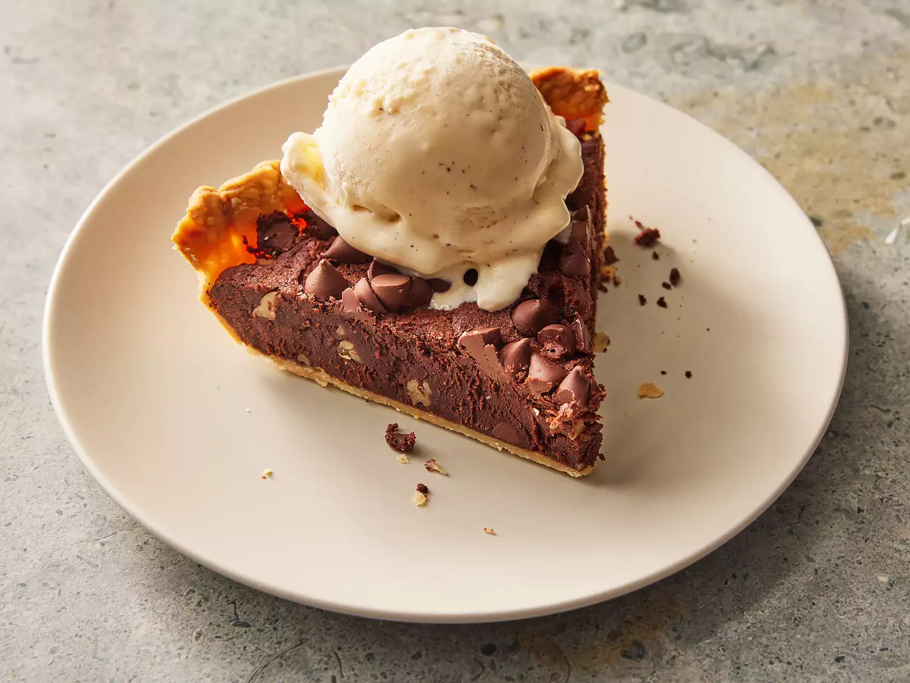

Brownie Pie

Description:
A brownie is a square or rectangular chocolate baked confection that comes in a variety of forms and densities. A pie is a baked dish which is usually made of a pastry dough casing that contains a filling of various sweet or savoury ingredients.
By following this simple recipe, you will learn how to make delicious brownie pies at home with inexpensive ingredients. A fun snack for yourself, your children, and even house guests!
Ingredients:
Crust:
- 1 1/4 cups of all-purpose flour, plus more for rolling
- 1 tablespoon of granulated sugar
- 1/2 teaspoon of kosher salt
- 1/2 cup of cold unsalted butter, cut into 1/2-inch pieces
- 3 tablespoons of ice water, or more as needed
Filling:
- 10 tablespoons of unsalted butter, melted and cooled
- 3/4 cup of granulated sugar
- 2 large eggs, at room temperature
- 1 large egg yolk, at room temperature
- 2 tablespoons of canola oil
- 1 teaspoon of vanilla extract
- 3/4 cup of unsweetened cocoa powder
- 1/2 cup of all-purpose flour
- 2 teaspoons of instant espresso granules
- 1/2 teaspoon of kosher salt
- 1/2 cup of chopped walnuts or hazelnuts
- 1/2 cup of semisweet chocolate chips, divided
Steps:
- For the crust, combine flour, sugar, and a teaspoon of salt in a food processor and pulse about 3 times until combined. Scatter cold butter over flour mixture in food processor. Pulse about 6 times until butter resembles pea-sized pieces. Drizzle 3 tablespoons of water over butter mixture. Pulse about 6 times until couscous-like beads of dough form, adding 1 more tablespoon of ice water if needed.
- Transfer dough to a work surface, and press into a single mass. Shape and flatten dough into a disk. Wrap in plastic wrap, and chill for at least 1 hour or up to 2 days.
- Unwrap dough and place on a lightly floured work surface. Let dough sit at room temperature for 10 minutes to soften. Dust top of dough with flour. Using a lightly floured rolling pin, roll dick into a 12-inch circle. Place in a 9-inch pie plate, pressing into bottom and up sides of pie plate. Fold edges under, and crimp as desired. Cover with plastic wrap, and freeze for 30 minutes.
- Preheat oven to 350 degrees F (175 degrees C). Place parchment paper over dough in pie plate; fill with pie weights or dried beans.
- Bake in the preheated oven until crust is starting to set, about 15 minutes. Carefully remove pie plate from oven and take off parchment paper and pie weights. Return pie plate to oven, and bake until crust is light golden brown, 8 to 12 minutes. Transfer to a wire rack; let cool to room temperature, about 20 minutes.
- Whisk together melted butter, sugar, eggs, egg yolk, canola oil, and vanilla extract in a bowl until blended and smooth. Whisk in cocoa, flour, instant espresso, and salt just until combined. Stir in nuts and 1/4 cup of chocolate chips. Scrape mixture into cooled crust, and smooth top with a small offset spatula. Sprinkle remaining 1/4 cup of chocolate chips on top of the pie.
- Bake in the preheated oven until a toothpick inserted in the center comes out clean, 30 to 35 minutes, covering the crust with aluminum foil if it gets too dark. Let cool 20 minutes before serving.